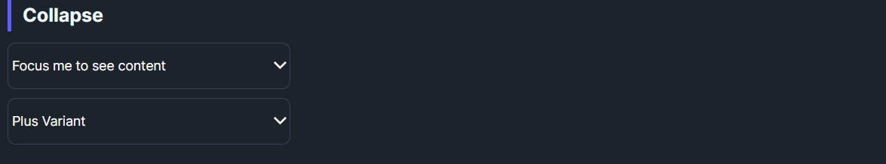

DaisyCollapse is an Expander-based container for revealing content under a clickable header. It offers Arrow and Plus indicator variants with a 0.2s rotation animation, uses configurable padding/corners from the theme, and hides content when collapsed. Ideal for short disclosures, FAQs, or inline details.
| Variant | Description |
|---|---|
| Arrow (default) | Chevron on the right rotates 180° when expanded. |
| Plus | Plus icon rotates into an “×” when expanded. |
| Property | Description |
|---|---|
IsExpanded |
Toggles visibility of the content presenter; bound to the header toggle. |
Header |
Shown in the toggle button; can be any content. |
Content |
Shown below the header when expanded; supports any child UI. |
Padding / CornerRadius |
Control spacing and rounding of both header and body regions. |
<!-- Default arrow collapse -->
<controls:DaisyCollapse Header="Focus me to see content">
<TextBlock Text="Here is the hidden content." Padding="10" />
</controls:DaisyCollapse>
<!-- Plus variant -->
<controls:DaisyCollapse Variant="Plus" Header="Plus Variant">
<TextBlock Text="More content." Padding="10" />
</controls:DaisyCollapse>
<!-- Nested content with inputs -->
<controls:DaisyCollapse Header="Filters">
<StackPanel Spacing="8">
<controls:DaisyCheckBox Content="In stock" IsChecked="True" />
<controls:DaisyCheckBox Content="On sale" />
<controls:DaisyButton Content="Apply" Variant="Primary" Size="Small" />
</StackPanel>
</controls:DaisyCollapse>DaisyAccordion instead.Padding to the body content for spacing; default padding is applied from the theme.